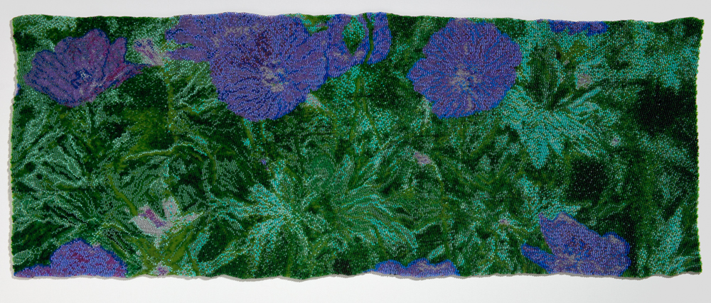
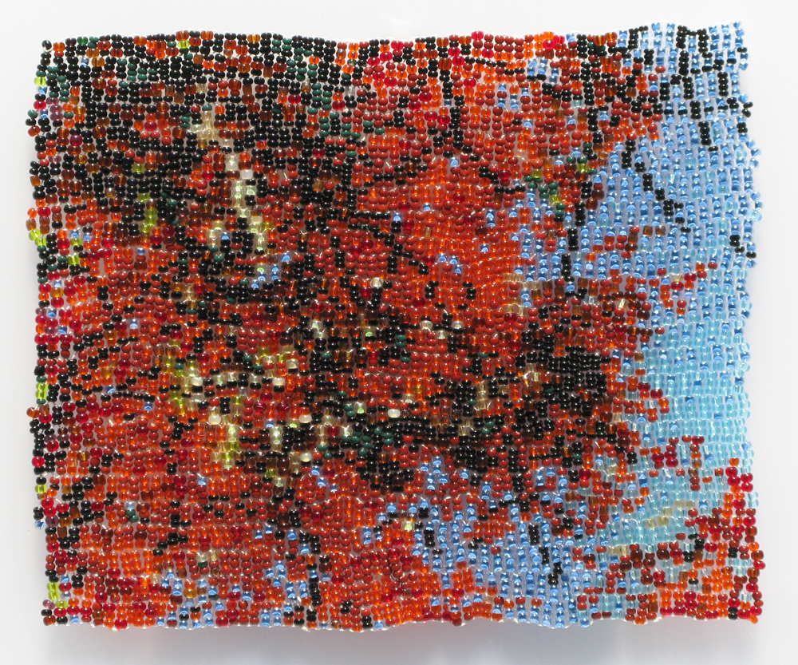
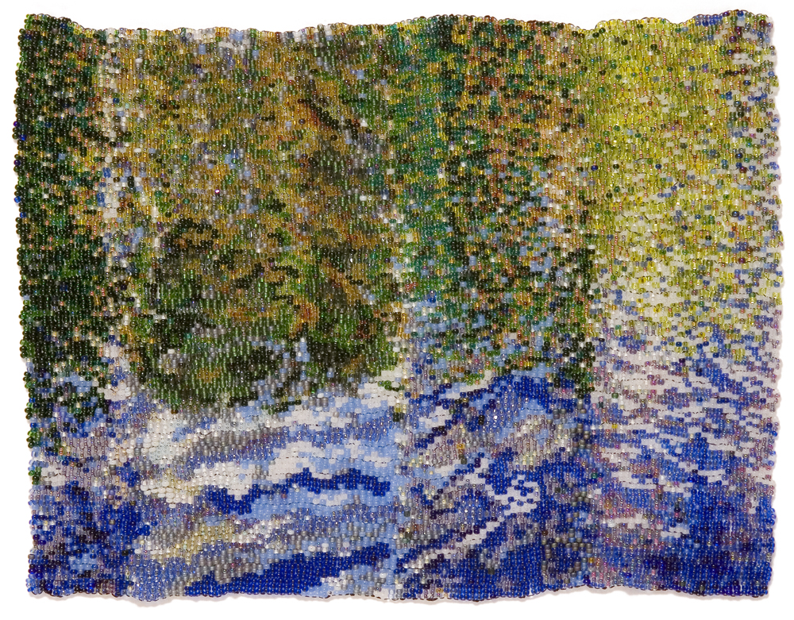
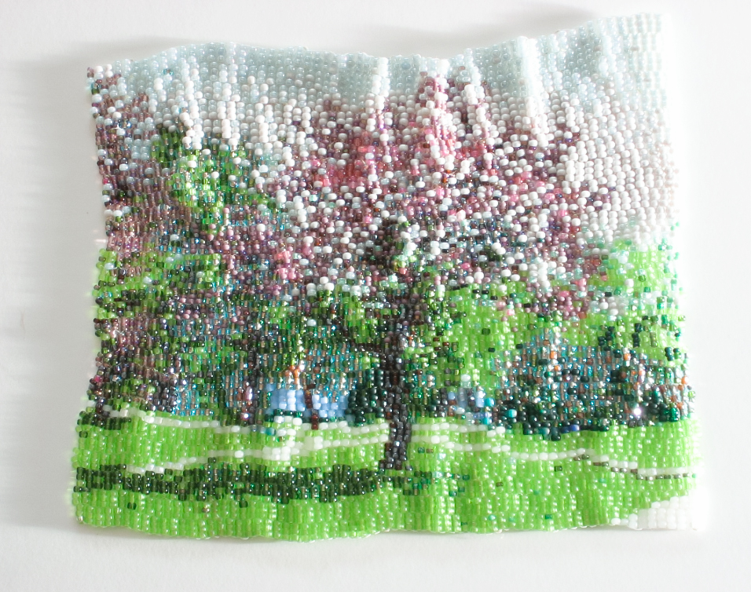

glass beads, thread.
10 x 14in
2010
Photo credit: E. G. Schempf
This piece was created from a photograph I took on February 22, 2010. The ice-covered branches of the trees looked crystalline in the sunlight and the icicles glistened as if they were lit from inside.
glass beads, thread.
12 x 32 in.
2012
Photo credit: E. G. Schempf
The pattern for this piece was a photograph I took of geranium sanguineum, a ground cover that grows in front of my house.
The flowers only bloom for two to three weeks during late May and early June. They are a bright blue-magenta that looks fluorescent at certain times of the day. When I photograph them from an oblique angle, the strange color is more visible.
glass beads, thread.
4.5 x 6in
2008
Photo credit: E. G. Schempf
glass beads, thread.
3 x 5in
2010
Photo credit: E. G. Schempf
This piece memorializes a tree that once adorned the front lawn of my neighbor’s house. The beadwork was based on a photograph that I took October 24, 2009.
The tree was cut down the next year; the fall has not been the same without its robust canopy shading our street.
glass beads, thread.
3.75 x 4.5in
2011
For this piece I used a photograph of a tree that was across the parking lot from our school. It was one of those fall days when the sunlight made its leaves glow a bright orange.
I focused in and selected an area of the photo where the color was most intense and used it as a pattern for this beaded picture.
glass beads, thread.
7 x 9in
2008
Photo credit: E. G. Schempf
glass beads, thread.
14 x 17in
2007
Photo credit: Hollis Officer
This piece incorporates an MRI image collaged among organic forms that refer to nervous system tissue.
These cling in a rhythmic arrangement of underwater ferns, corals, and sea life.
glass beads, thread.
4.25 x 5in
2008
glass beads, thread.
4.5 x 10in
2014
This piece was based on a photograph of a maple tree that I took October 24, 2009.
A view through a wide and short window, it is an attempt to document the glorious intensity of color in the sunlight passing through vividly colored leaves.